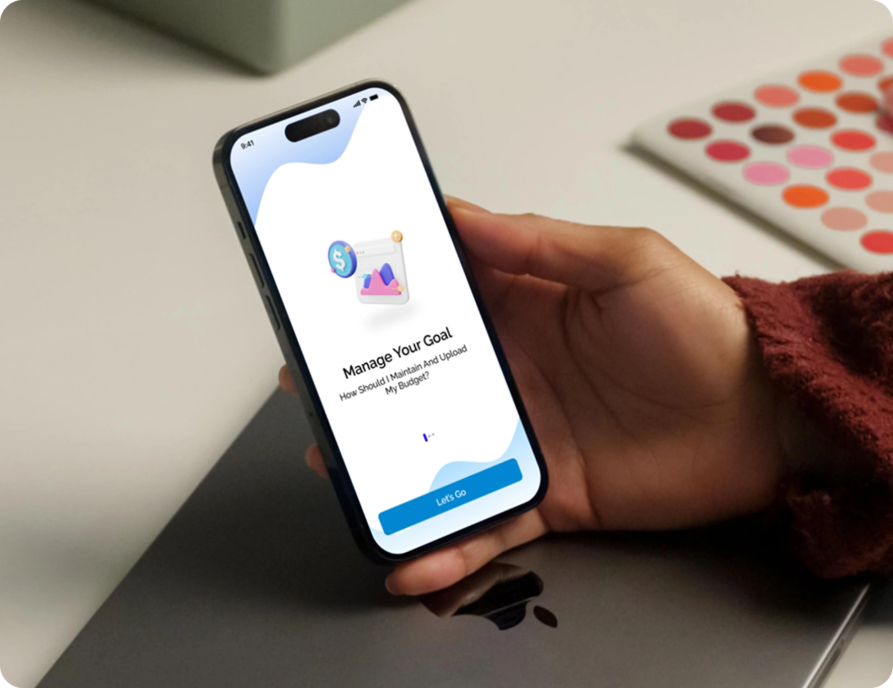

Case 01, Mobile app, personal finance
Monity
- The problem
- Most people quit budgeting apps within two weeks. Typing in every receipt gets boring fast.
- What I did
- I added receipt scanning, put the debt goal right on the home screen, and built in an AI helper that gives simple tips.
- The result
- A friendly app that makes saving money feel doable.